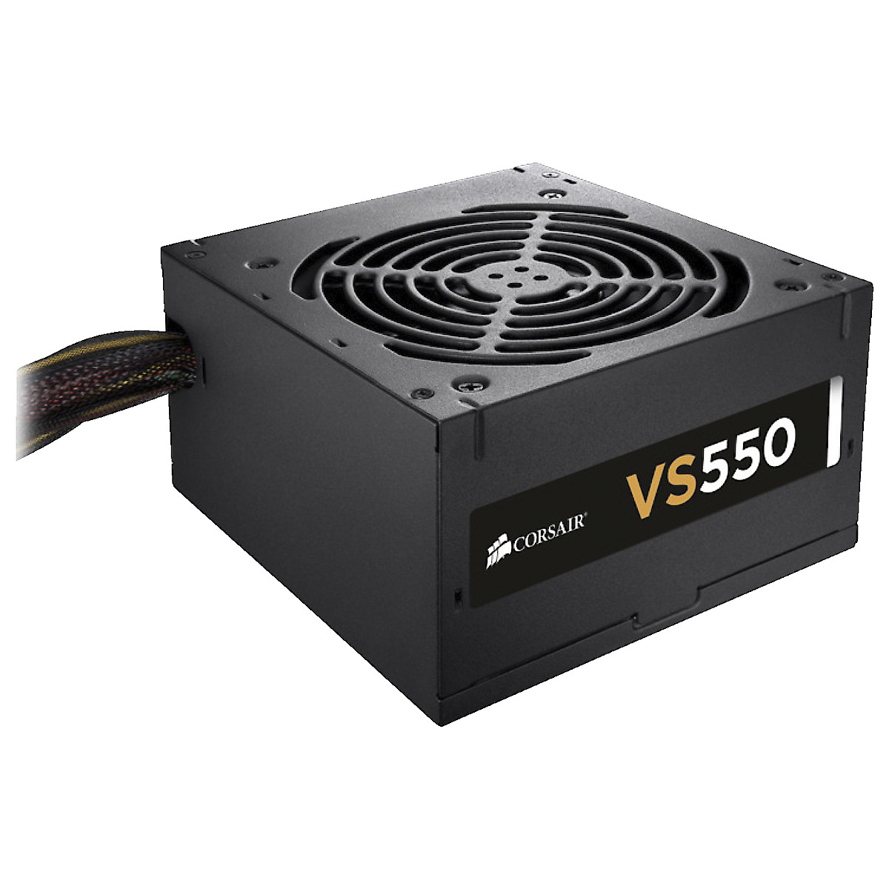

Nätaggreggat
Ett nätaggregat är ett system som förser en eller flera energikrävande belastningsobjekt med elektrisk energi. Nätaggregat används i bland annat datorer, förstärkare och liknande. Det är nätaggregatets uppgift att omvandla växelströmmen från vägguttagen till de olika former av elektricitet (spänning, ström och frekvens), som de olika ingående komponenterna behöver. Komponenterna i nätaggregatet blir relativt varma och kräver kylning, antingen med fläkt eller passiv. Vid passiv kylning behövs ofta större kylelement vid kraftfullare datorer och starkare nätaggregat.
